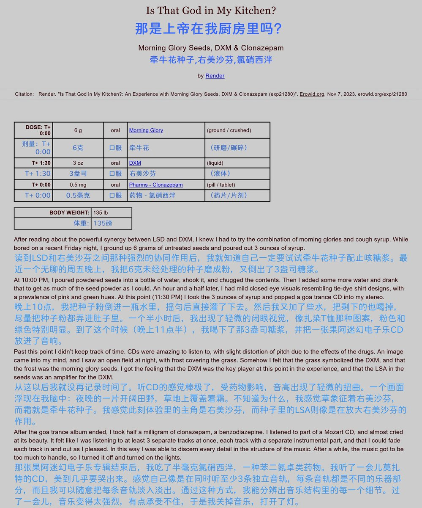
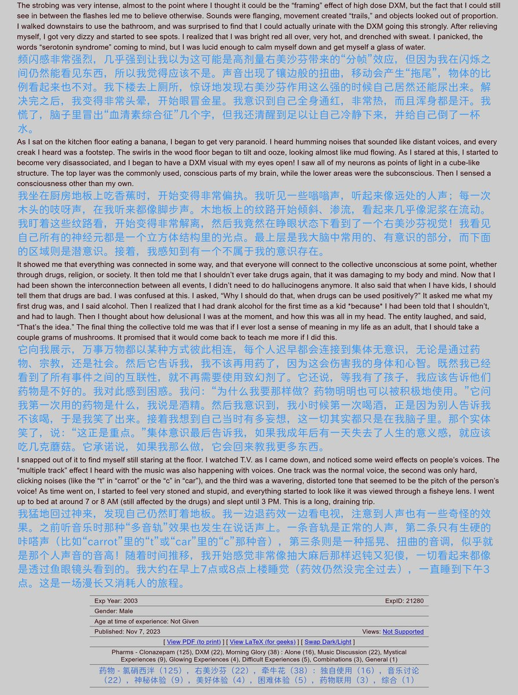
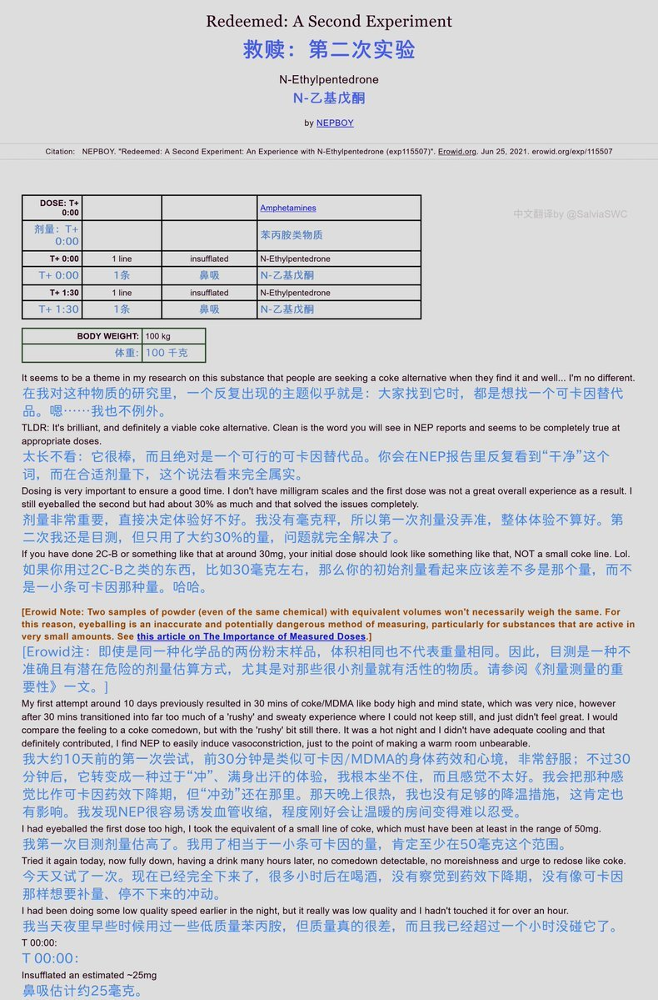
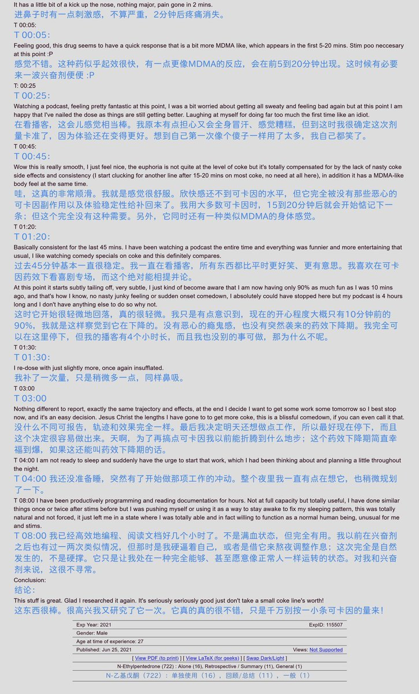

药物报告day29——右美沙芬+牵牛花种子的联用
众所周知，某些品种的牵牛花种子中含有LSA，一种LSD的类似物，也具有致幻药效😋
本报告作者联用了LSA和DXM，获得了一个深刻的致幻体验🥺
话说大家有吃过牵牛花种子的嘛，感觉怎么样👀
全文链接： https://t.co/FeZ8RvhdEz

众所周知，某些品种的牵牛花种子中含有LSA，一种LSD的类似物，也具有致幻药效😋
本报告作者联用了LSA和DXM，获得了一个深刻的致幻体验🥺
话说大家有吃过牵牛花种子的嘛，感觉怎么样👀
全文链接： https://t.co/FeZ8RvhdEz




药物报告day28——NEP试药
NEP(N-乙基戊酮)是一种卡西酮类物质，据称可以产生类似于可卡因/MDMA的兴奋剂药效，本文记录了一名外国小哥服用NEP的过程和感受😋
据我所知，推上卖的很多兴奋剂RC都是NEP或其类似物🤓☝若要使用此类RC，欢迎参考FOW提供的相关信息哦🥺
文字版链接:https://t.co/5PMRBFu9a7 https://t.co/3HIYuVmHq3 https://t.co/EGcyfthP6E
NEP(N-乙基戊酮)是一种卡西酮类物质，据称可以产生类似于可卡因/MDMA的兴奋剂药效，本文记录了一名外国小哥服用NEP的过程和感受😋
据我所知，推上卖的很多兴奋剂RC都是NEP或其类似物🤓☝若要使用此类RC，欢迎参考FOW提供的相关信息哦🥺
文字版链接:https://t.co/5PMRBFu9a7 https://t.co/3HIYuVmHq3 https://t.co/EGcyfthP6E